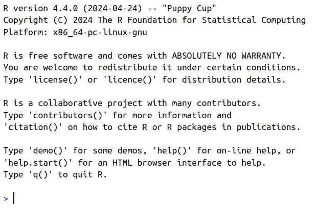

1 + 1[1] 22 * 2[1] 42 ^ 3[1] 8RAdelaide 2024
July 9, 2024
Stephen (Stevie) Pederson (They/Them)
ngsReports, extraChIPs, motifTestR, transmogRstrandCheckR, sSNAPPY, tadar


Made countless typos, horrible decisions and catastrophic errors
I crash R at least once a week…
R is formally run by a volunteer committee (R Core)


R as a standalone tool \(\implies\) open R NOT RStudio
linux: Open a terminal then enter R
Like we did earlier, in the R Console type:
x <- 5Where have we created the object x?
x in our R EnvironmentGlobal Environment